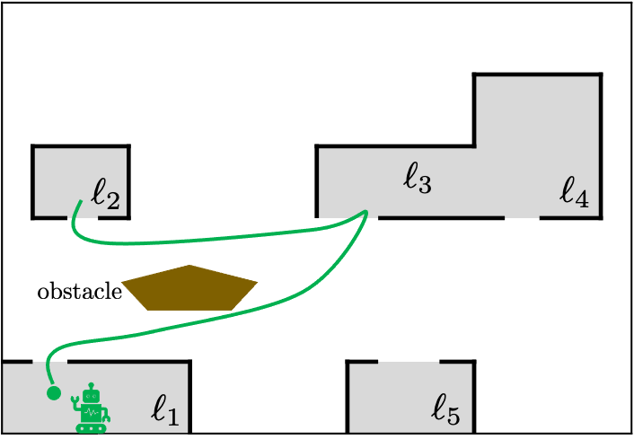
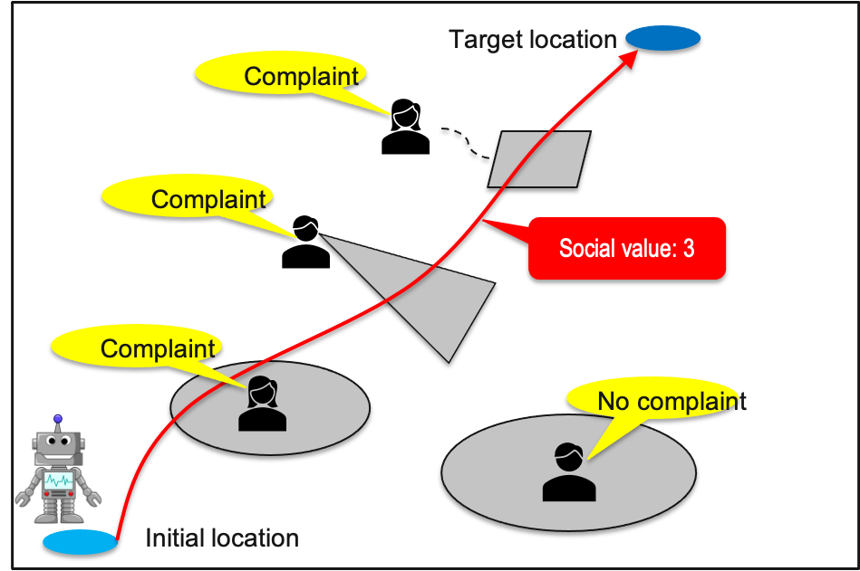
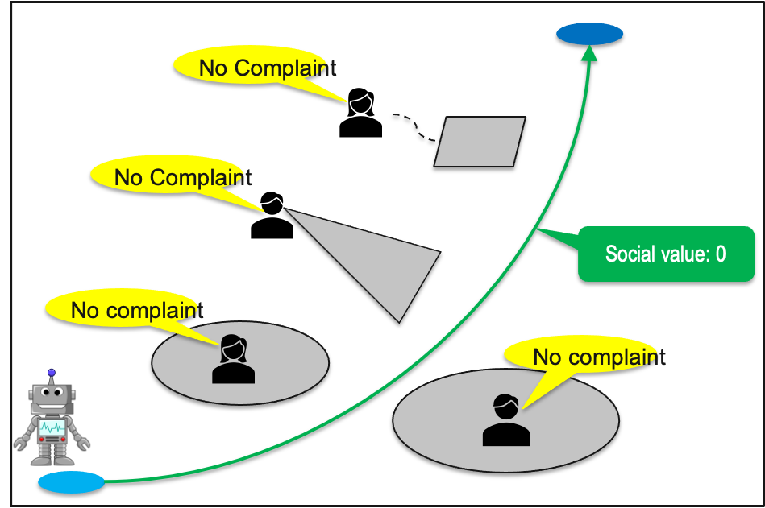
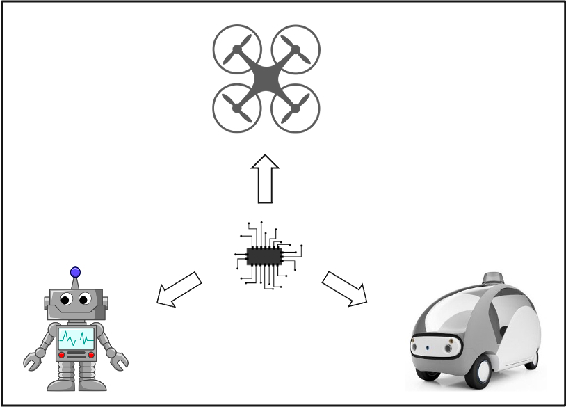

Research Projects
Scalable Control Synthesis for Multi-Robot Systems under Temporal Logic Specifications

Motion planning traditionally consists of generating robot trajectories that reach a goal region from a starting point while avoiding obstacles. More recently, new planning approaches have been proposed that can handle a richer class of tasks, than the classical point-to-point navigation, and can capture temporal goals. Such tasks can be, e.g., sequencing or coverage, data gathering, intermittent communication, or persistent surveillance, and can be captured using formal languages, such as Linear Temporal Logic (LTL), developed in concurrency theory. Finding feasible robot paths that satisfy LTL-specified tasks can be achieved using tools from model checking theory. On the other hand, finding optimal robot paths that optimize a desired performance metric can be done using tools from optimal control synthesis. The goal of this project is to develop optimal control synthesis methods that scale well to large numbers of robots, large-sized environment and complext temporal logic specifications.
Socially-Aware Robot Planning via Bandit Human Feedback

Recent advances in onboard computing software and hard- ware make it appear that the time when robots will populate and operate in the same environments with humans is not too far away. As a result, there has recently been a strong interest in developing planning methods for robots that operate in close proximity to humans. To this date, most of these methods focus on safe planning in dense human crowds, where humans move frequently, and they often rely on standard collision avoidance techniques developed in the robotics literature for this purpose. While safety is indeed a critical specification for any human-robot system, the deployment of robots in environments populated by humans also requires planning methods that can incorporate different human utilities that are not always straightforward to express mathematically. In fact, it is often the case that humans will only provide high-level human feedback on whether they like an event or not,e.g., a robot behavior, without providing relevant contextual information, e.g., their locations in the case of safety. The goal of this project is to design collision-free, dynamically feasible, and socially-aware trajectories for robots operating in environments populated by humans.
An Optimal Graph-Search Method for Secure State Estimation

Cyber-Physical Systems (CPS) are networked systems consisting of embedded physical components, such as sensors and actuators, and computational components, such as controllers. The growing complexity of CPS and the frequent communication between components make them vulnerable to malicious attacks. As a result, secure state estimation is a critical requirement for the control of these systems. Many existing secure state estimation methods suffer from combinatorial complexity which grows with the number of states and sensors in the system. This complexity can be mitigated using optimization-based methods that relax the original state estimation problem, although at the cost of optimality as these methods often identify attack-free sensors as attacked. The goal of this project is to design a new optimal graph-search algorithm to correctly identify malicious attacks and to securely estimate the states even in large-scale CPS modeled as linear time-invariant systems.